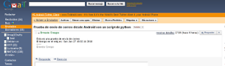
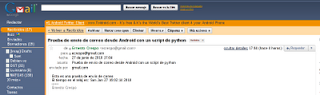

Enviar correo desde Android con python
Posted on Sun 27 June 2010 in Tutorial Python • 2 min read
Siguiendo con la API de ASE se tiene una función que permite enviar un correo pasando el correo, el asunto y el cuerpo del correo.
La función del API de ASE que permite enviar correos se llama: sendEmail(correo,asunto,cuerpo_correo)
A continuación se coloca el código del programa en python para enviar el correo:
#Se importa el módulo android
import android
#Se crea la instancia de la clase Android
droid = android.Android()
#Se define la dirección de correo, el asunto del correo y el contenido del mismo
asunto = "Prueba de envio de correo desde Android con un script de python"
para = "ecrespo@gmail.com"
cuerpo_correo = "Esta es una prueba de envio de correo\n El tiempo en el reloj es: %s\n ------\n Ernesto Crespo\n" %time.ctime()
#Se llama a la función sendEmail con los datos necesarios.
#Esto llama a la aplicación de envío de correo de forma gráfica con la
#información que se pasa en la función.
droid.sendEmail(para,asunto,cuerpo_correo)
#Se finaliza la instancia de la clase.
droid.exit()
El resultado se puede ver en las siguientes imágenes: La primera imagen es del buzón de salida.

Y la siguiente imagen es del buzón de recibidos.

Notará que en el correo se tiene la hora de ejecución del script pero el script se recibió a otra hora, el problema fue que el celular no tenía conexión 3G y se tuvo que conectar a una red wifi para poder enviar los correos.
===
¡Haz tu donativo! Si te gustó el artículo puedes realizar un donativo con Bitcoin (BTC) usando la billetera digital de tu preferencia a la siguiente dirección: 17MtNybhdkA9GV3UNS6BTwPcuhjXoPrSzV
O Escaneando el código QR desde billetera: